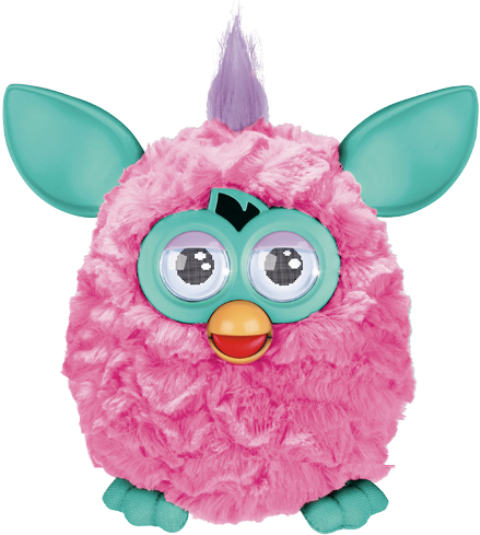

Entertainment Robots!
 Entertainment robots are robots which people (usually children)
use for fun. These robots can express emotions when you hold and touch them. Sometimes they respond to you when they
hear you talk or when they see you.These types of robots are usually animals such as dogs, cats, guinea pigs and
more. They would respond to you when you gave them "food" and when you stroke them. There are also humanoids (robots
which look like humans). The more features this robot has the more expensive it is, a good example of this is NAO.
NAO is an expensive humanoid who can do many things, such as walking and talking, playing games and more.
Entertainment robots are robots which people (usually children)
use for fun. These robots can express emotions when you hold and touch them. Sometimes they respond to you when they
hear you talk or when they see you.These types of robots are usually animals such as dogs, cats, guinea pigs and
more. They would respond to you when you gave them "food" and when you stroke them. There are also humanoids (robots
which look like humans). The more features this robot has the more expensive it is, a good example of this is NAO.
NAO is an expensive humanoid who can do many things, such as walking and talking, playing games and more.
These robots are usually used in theme parks, a good example of
this is Disney. They have been doing entertainment robots as long as anyone and they do them quite well. With
dancing bears and singing pirates Disney's imagineers have created thousands of robots. There is a robot dinosaur
named Lucky. He walks on his two back legs and pulls a very large cart of "silk flowers". Really the cart is full of
batteries. Even Disney has not figured-out the battery issue that plagues mobile robots. This was the only way they
could get enough battery life for the robot to spend a meaningful amount of time wandering the amusement part.
And who can forget the consumer entertainment robots that have come onto the market in the last decade or so? From
those little Furby's that go for around twenty bucks to Sony's Aibo that can top a thousand dollars a pop; these
have been the first robots to really pervade our homes.
The Lego Mindstorms are also a big player in this category. Future roboticists will likely remember their first Lego
Mindstorms in the same way today's computer scientists remember their first TRS80 personal computer.
HOME | BACK
TO TOP